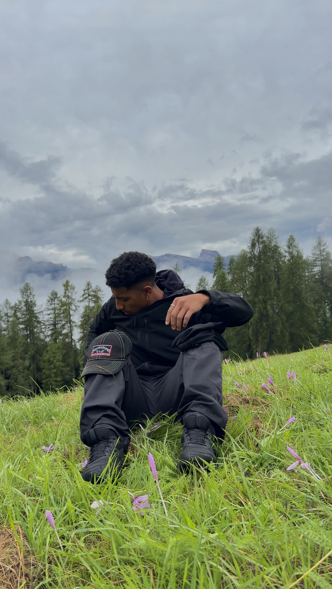
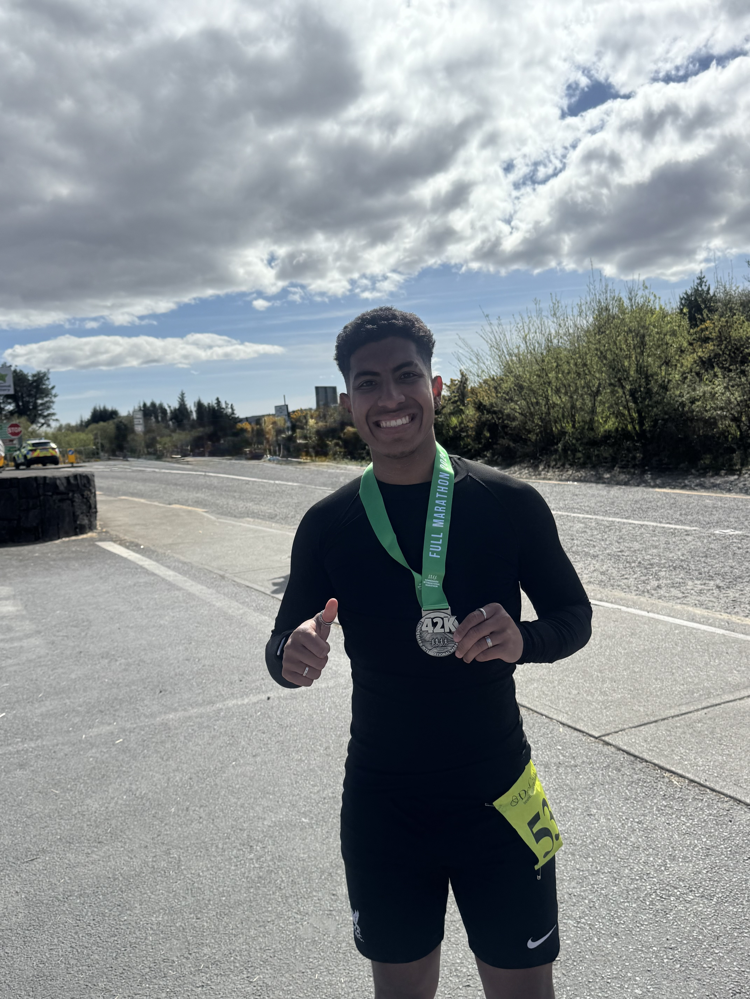
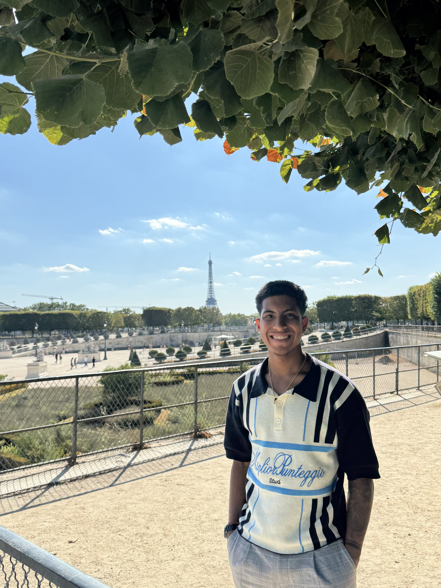
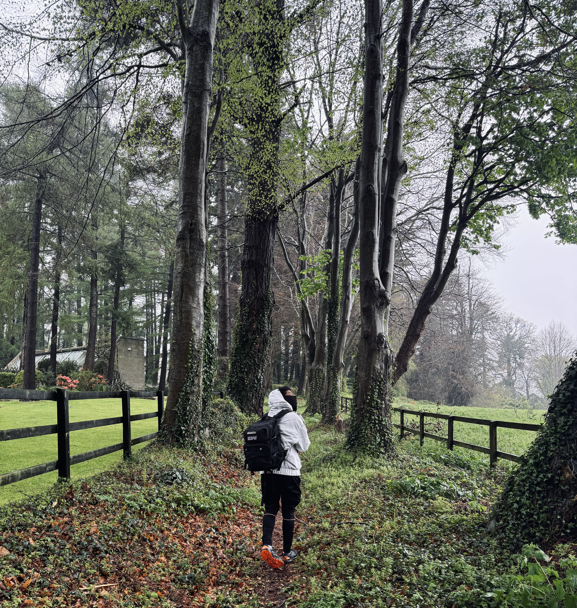

Offline_Mode
Connection: Human Mode🇮🇪 > Éire (Ireland)
Ireland is more than just a coordinate on a map—it is the place where I forced myself to grow. Moving from Spain completely on my own was a hard reset on my life.
I came here because Dublin is a leading European tech hub, and I wanted to surround myself with industry experts. But beyond the career opportunities, the challenge of building a life from scratch, mastering a second language, and navigating early independence stripped away my comfort zone. Ireland taught me that true resilience is built when you have no other choice but to adapt and thrive.

🧠 > The_Mindset
"Thanks to Dublin, I have learned to be a better person, to deeply value what I have, and to understand that not everything works out on the first try. Failure isn't a dead end; it's simply data to configure the next attempt."
⛰️ > System.restore()
When I'm not configuring a server or studying networks, I'm usually disconnecting to recharge. Technical skills can be taught, but discipline is forged.
- Marathons: Endurance sports taught me that consistency always beats intensity. Pushing past the "wall" at kilometer 30 builds the exact mental toughness needed to solve critical problems under pressure.
- The Outdoors: Whether I'm hitting the trails in the mountains or exploring cities like Paris, spending time off the grid is how I run my own personal maintenance.



Personal_Milestones
"The foundation is built. The discipline is set. The rest is execution."
> Pending Objectives ...